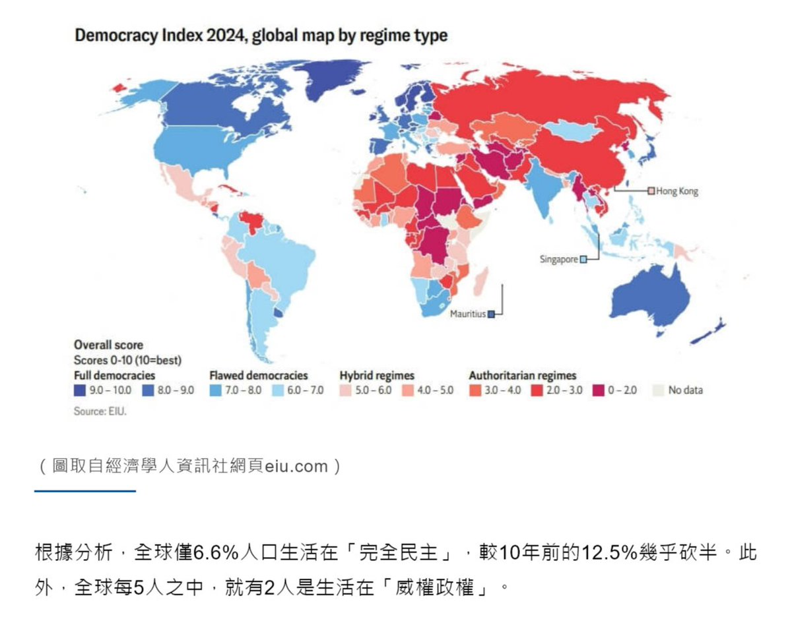

The Raven in the Rain🏳️🌈
@Raincandy_1937
RT @winosaur32286: 你是台灣人，你的國家民主指數全球第12、亞洲第一，「完全民主國家」。
全世界只有6.6%人口可以投胎到「完全民主國家」，享受不是自己爭取來的民主自由。
然後你整天被洗腦，歌頌一個排145名的神經病鄰國。
你的頭是不是很輕，裡面沒有內容…

Winosaur
@winosaur32286
你是台灣人，你的國家民主指數全球第12、亞洲第一，「完全民主國家」。
全世界只有6.6%人口可以投胎到「完全民主國家」，享受不是自己爭取來的民主自由。
然後你整天被洗腦，歌頌一個排145名的神經病鄰國。
你的頭是不是很輕，裡面沒有內容物?
你這種人就應該投胎去北韓，而不是浪費台灣的民主。 https://t.co/yIvkHUqWKt